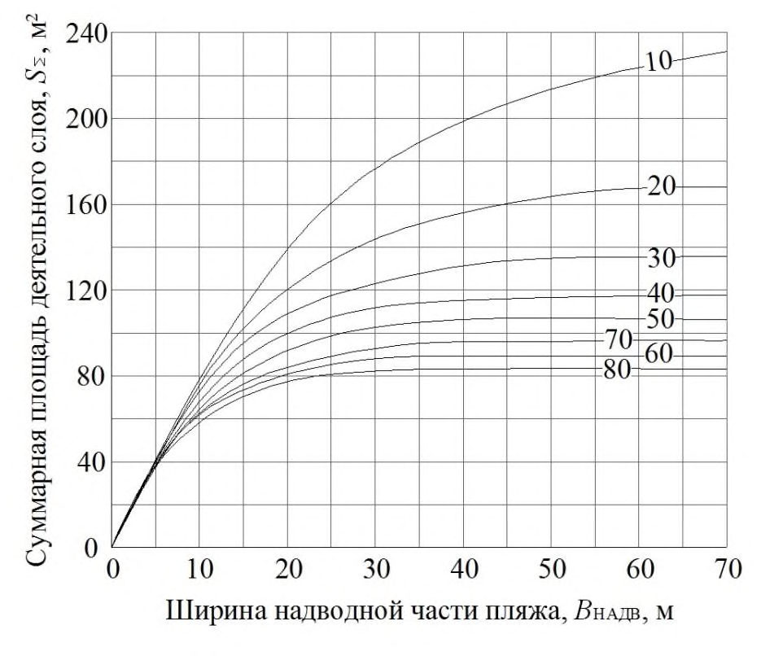
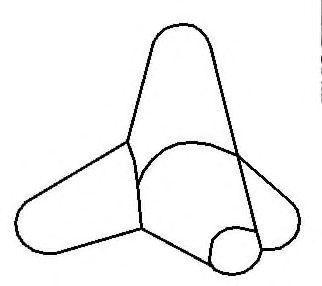
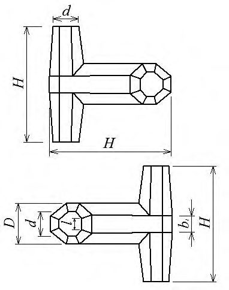
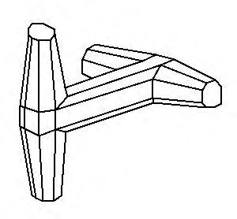

СП 416.1325800.2018 «Инженерная защита берегов приливных морей. Правила проектир»
О документе: разработчики, утверждение, регистрация, ключевые слова
СВОД ПРАВИЛ СП 416.1325800.2018
Правила проектирования
Издание официальное
1 ИСПОЛНИТЕЛЬ -Филиал АО «Научно-исследовательский институт транспортного строительства» «Научно-исследовательский центр «Морские берега» (Филиал АО ЦНИИС «НИЦ «Морские берега»)
- 2 ВНЕСЕН Техническим комитетом по стандартизации ТК 465 «Строительство»
- 3 ПОДГОТОВЛЕН к утверждению Департаментом градостроительной деятельности и архитектуры Министерства строительства и жилищно-коммунального хозяйства Российской Федерации (Минстрой России)
4 УТВЕРЖДЕН приказом Министерства строительства и жилищнокоммунального хозяйства Российской Федерации от 30 ноября 2018 г. № 781/пр и введен в действие с 31 мая 2019 г.
- 5 ЗАРЕГИСТРИРОВАН Федеральным агентством по техническому регулированию и метрологии (Росстандарт)
В случае пересмотра (замены) или отмены настоящего свода правил соответствующее уведомление будет опубликовано в установленном порядке. Соответствующая информация, уведомление и тексты размещаются также в информационной системе общего пользования - на официальном сайте разработчика (Минстрой России) в сети Интернет.
© Минстрой России, 2018
Настоящий нормативный документ не может быть полностью или частично воспроизведен, тиражирован и распространен в качестве официального издания на территории Российской Федерации без разрешения Минстроя России
Дата введения - 2019-05-31
УДК ОКС 93.160
Ключевые слова: волногасящие сооружения, берегозащитные сооружения, инженерная защита, приливные моря
ИСПОЛНИТЕЛЬ
АО «Научно-исследовательский центр «Строительство»
наименование организации
Генеральный директор
должность
СОИСПОЛНИТЕЛЬ
Филиал АО ЦНИИС «Научно-исследовательский центр «Морские берега»
наименование организации
| Директор филиала должность | ____________________ личная подпись | Р.М. Тлявлин ____________________ инициалы, фамилия | |
|---|---|---|---|
| Руководитель разработки | Зав. лабораторией защиты берегов | ________________ | Г.В. Тлявлина |
| должность | личная подпись | инициалы, фамилия | |
| Исполнитель | Вед. научный сотрудник | ____________________ | Н.А. Ярославцев |
| должность | личная подпись | инициалы, фамилия | |
| Исполнитель | Старший научный сотрудник | ____________________ | В.А. Петров |
| должность | личная подпись | инициалы, фамилия |
\_\_\_\_\_\_\_\_\_\_\_\_\_\_\_\_\_\_\_\_
личная подпись
А.В. Кузьмин
\_\_\_\_\_\_\_\_\_\_\_\_\_\_\_\_\_\_\_\_
инициалы, фамилия
Введение
6 ВВЕДЕН ВПЕРВЫЕ
Настоящий свод правил разработан с учетом требований федеральных законов от 30 декабря 2009 г. № 384-ФЗ «Технический регламент о безопасности зданий и сооружений», от 29 декабря 2004 г. № 190-ФЗ «Градостроительный кодекс Российской Федерации», от 3 июня 2006 г. № 74-ФЗ «Водный кодекс Российской Федерации», от 31 июля 1998 г. № 155-ФЗ «О внутренних морских водах, территориальном море и прилегающей зоне Российской Федерации», от 10 января 2002 г. № 7-ФЗ «Об охране окружающей среды» и постановления Правительства Российской Федерации от 2 ноября 2013 г. № 986 «О классификации гидротехнических сооружений».
Настоящий свод правил разработан филиалом АО ЦНИИС «НИЦ «Морские берега» (ответственный исполнитель - канд. техн. наук Г.В. Тлявлина , канд. геогр. наук В.А. Петров , канд. техн. наук Р.М. Тлявлин , канд. техн. наук Н.А. Ярославцев , д-р техн. наук К.Н. Макаров ).
1Область применения
Настоящий свод правил распространяется на проектирование сооружений инженерной защиты берегов приливных морей.
2Нормативные ссылки
- В настоящем своде правил использованы нормативные ссылки на следующие документы:
- ГОСТ 20425-2016 Тетраподы для берегозащитных и оградительных сооружений
- ГОСТ 26633-2015 Бетоны тяжелые и мелкозернистые. Технические условия
- СП 14.13330.2018 «СНиП II-7-81* Строительство в сейсмических районах»
- СП 28.13330.2017 «СНиП 2.03.11-85 Защита строительных конструкций от коррозии» (с изменением № 1)
- СП 38.13330.2018 «СНиП 2.06.04-82* Нагрузки и воздействия на гидротехнические сооружения (волновые, ледовые и от судов)»
- СП 39.13330.2012 «СНиП 2.06.05-84* Плотины из грунтовых материалов» (с изменениями № 1, № 2)
- СП 41.13330.2012 «СНиП 2.06.08-87 Бетонные и железобетонные конструкции гидротехнических сооружений» (с изменением № 1)
- СП 47.13330.2016 «СНиП 11-02-96 Инженерные изыскания для строительства. Основные положения»
- СП 58.13330.2012 «СНиП 33-01-2003 Гидротехнические сооружения. Основные положения» (с изменением № 1)
- СП 116.13330.2012 «СНиП 22-02-2003 Инженерная защита территорий, зданий и сооружений от опасных геологических процессов. Основные положения»
Правила проектирования
Engineering Protection of Coasts Tidal Seas. Design rules
СП 277.1325800.2016 Сооружения морские берегозащитные. Правила проектирования
Примечание - При пользовании настоящим сводом правил целесообразно проверить действие ссылочных документов в информационной системе общего пользования - на официальном сайте федерального органа исполнительной власти в сфере стандартизации в сети Интернет или по ежегодному информационному указателю «Национальные стандарты», который опубликован по состоянию на 1 января текущего года, и по выпускам ежемесячного информационного указателя «Национальные стандарты» за текущий год. Если заменен ссылочный документ, на который дана недатированная ссылка, то рекомендуется использовать действующую версию этого документа с учетом всех внесенных в данную версию изменений. Если заменен ссылочный документ, на который дана датированная ссылка, то рекомендуется использовать версию этого документа с указанным выше годом утверждения (принятия). Если после утверждения настоящего свода правил в ссылочный документ, на который дана датированная ссылка, внесено изменение, затрагивающее положение, на которое дана ссылка, то это положение рекомендуется применять без учета данного изменения. Если ссылочный документ отменен без замены, то положение, в котором дана ссылка на него, рекомендуется применять в части, не затрагивающей эту ссылку. Сведения о действии сводов правил целесообразно проверить в Федеральном информационном фонде стандартов.
3Термины и определения
В настоящем своде правил применены термины по СП 277.1325800, а также следующие термины с соответствующими определениями:
- 3.1величина прилива
- Разность уровней между полной и малой водами.
- 3.2гидрологический процесс
- Процесс формирования гидрологического режима.
- 3.3естественный пляж
- Пляж, созданный без участия антропогенных средств доставки наносов в береговую зону.
- 3.4малая вода
- Наинизшее стояние уровня воды во время отлива.
- 3.5осушка
- Полоса дна, осушаемая в фазу отлива.
- 3.6полная вода
- Наивысшее стояние уровня воды во время прилива.
- 3.7приливное море
- Море, связанное с океаном, в котором величина прилива превышает 1,0 м.
- 3.8приливы
- Длинные волны в океанах и морях, обусловленные приливообразующими силами Земли, Луны и Солнца.
- 3.9уровень моря
- Высота невзволнованной поверхности моря, измеряемая относительно некоторого горизонта, условно принятого за нуль.
- 3.10фасонные блоки (массивы)
- Бетонные или железобетонные изделия специальной конфигурации, применяемые для защиты берега от воздействия волн и течений.
4Общие положения
- результатов инженерно-геодезических, инженерно-геологических, инженерногидрометеорологических (включая литодинамические исследования) и инженерноэкологических изысканий для строительства;
- планировочных решений и вариантной проработки решений, принятых в схемах (проектах) инженерной защиты;
- данных, характеризующих особенности применения территорий, зданий и сооружений как существующих, так и проектируемых, с прогнозом изменения этих особенностей;
- результатов мониторинга литодинамических процессов и технического состояния существующих гидротехнических сооружений на участке проектирования;
- технико-экономического сравнения возможных вариантов проектных решений инженерной защиты берегов (при ее одинаковых функциональных свойствах) с оценкой предотвращенных потерь (ущерба и социальных потерь);
- опыта проектирования, строительства и эксплуатации сооружений инженерной защиты берегов в аналогичных природных условиях.
- наиболее полное использование местных строительных материалов и природных ресурсов;
СП 416.1325800.2018
- производство работ способами, не приводящими к появлению новых и (или) интенсификации действующих опасных геологических процессов и гидрологических явлений;
- сохранение заповедных зон, ландшафтов и т. д.;
- сочетание с мероприятиями по охране окружающей среды;
- систематические наблюдения (мониторинг) за состоянием защищаемых территорий и объектов и за работой сооружений инженерной защиты в период строительства и эксплуатации.
- неоднородность рельефа дна;
- изрезанность контура береговой линии;
- наличие естественных и искусственных препятствий, оказывающих влияние на прохождение волн;
- приморские устьевые участки рек с течениями;
- комплекс сооружений, включающий в себя конструкции разных типов;
- сооружения, размещаемые в проливах и бухтах;
- уникальные сооружения, требования к проектированию которых не установлены в соответствующих нормативных документах (НД);
- влияние природных процессов на объекты стратегической важности при наличии опасных размывов берега, следует проводить физическое (гидравлическое) моделирование на пространственной модели в волновом бассейне.
5Исходные данные для проектирования
5.1Общие требования
5.2Инженерно-геодезические изыскания
- батиметрические карты и планы в масштабах от 1:200000 (на глубокой воде) до 1:2000-1:500 (в прибрежной зоне) для расчета параметров волн;
- батиметрические и топографические планы (рекомендуется разных лет) в масштабе от 1:2000 до 1:500 для определения объемов деформаций пляжа и подводного склона, оценки мощности и направления потоков наносов и их дефицита (рекомендуемый интервал - не менее одного года).
- от 1:5000 до 1:1000 на стадиях, предшествующих разработке проектной документации;
- в масштабах 1:500 или 1:200 при разработке проектной и рабочей документации.
Допускается использование в качестве основы планов в масштабе 1:1000 при разработке проектной документации сооружений инженерной защиты берегов приливных морей только при условии спокойного рельефа дна и отсутствия гидротехнических сооружений на участке.
5.3Инженерно-гидрометеорологические изыскания
- расчетные характеристики уровня моря, определяемые с учетом СП 38.13330 и пункта 6.4 СП 277.1325800.2016;
- расчетные характеристики ветра над акваторией моря, определяемые с учетом СП 38.13330 и пункта 6.5 СП 277.1325800.2016;
- расчетные характеристики волн, определяемые с учетом СП 38.13330 и пункта 6.6 СП 277.1325800.2016;
- значения ветрового и волнового нагонов, определяемые с учетом СП 38.13330 и пункта 6.7 СП 277.1325800.2016;
- оценку вдольберегового и поперечного транспортов наносов, определяемую согласно пункту 6.9 СП 277.1325800.2016.
- границы литодинамических систем;
- строение надводной и подводной частей берегового склона с описанием береговых уступов, клифов, бенчей и осушек;
- типы берегов с учетом основных берегоформирующих факторов, наличие термоабразии на берегах с распространением вечной мерзлоты;
- интенсивность размыва подводного склона за многолетний период;
- количественные и пространственные характеристики вдольберегового и поперечного перемещения наносов;
- источники питания наносов;
- баланс наносов на рассматриваемом участке берега моря;
- эффективность существующих берегозащитных сооружений и их влияние на прилегающие участки и окружающую среду;
- наличие волногасящего пляжа и его ширина;
- оценка бюджета пляжевых наносов после реализации берегозащитных мероприятий.
5.4Инженерно-геологические изыскания
5.5Инженерно-экологические изыскания
6Классификация сооружений инженерной зашиты берегов приливных морей и области их применения
7Нагрузки и воздействия на сооружения инженерной защиты берегов приливных морей
7.1Основные расчетные показатели
- по прочности и устойчивости -применением дифференцированных коэффициентов запаса, обеспеченностей уровня моря, параметров волнения и значений возвышения гребней сооружений над расчетным уровнем;
- по степени надежности заложения оснований фундаментов сооружений против подмыва - назначением дифференцированных значений заглублений их ниже глубины размыва.
Расчеты сооружений на устойчивость и прочность проводятся на нагрузки, возникающие в процессе строительства и эксплуатации.
Таблица 7.1
| Расчетные показатели сооружений инженерной защиты берегов приливных морей для класса сооружения | Расчетные показатели сооружений инженерной защиты берегов приливных морей для класса сооружения | Расчетные показатели сооружений инженерной защиты берегов приливных морей для класса сооружения | Расчетные показатели сооружений инженерной защиты берегов приливных морей для класса сооружения | Расчетные показатели сооружений инженерной защиты берегов приливных морей для класса сооружения | Расчетные показатели сооружений инженерной защиты берегов приливных морей для класса сооружения | Расчетные показатели сооружений инженерной защиты берегов приливных морей для класса сооружения | Расчетные показатели сооружений инженерной защиты берегов приливных морей для класса сооружения | Расчетные показатели сооружений инженерной защиты берегов приливных морей для класса сооружения | Расчетные показатели сооружений инженерной защиты берегов приливных морей для класса сооружения | Расчетные показатели сооружений инженерной защиты берегов приливных морей для класса сооружения | Расчетные показатели сооружений инженерной защиты берегов приливных морей для класса сооружения | |
|---|---|---|---|---|---|---|---|---|---|---|---|---|
| II | II | II | II | II | II | III | III | III | III | III | III | |
| Берегозащитные сооружения | Глубина заложения подошвы фундамента ниже размыва грунтов | Глубина заложения подошвы фундамента ниже размыва грунтов | Коэффициент запаса устойчивости 1) | Коэффициент запаса устойчивости 1) | Обеспеченность 2) ,% | Обеспеченность 2) ,% | Глубина заложения подошвы фундамента ниже | Глубина заложения подошвы фундамента ниже | Коэффициент запаса устойчивости 1) | Коэффициент запаса устойчивости 1) | Обеспеченность 2) ,% | Обеспеченность 2) ,% |
| нескаль- ных грунтов категорий I-II | скальных грунтов категории IV и выше | на сдвиг | на опроки- дывание | уровней моря из наивыс- ших за год | высот волн 3) | нескаль- ных грунтов категорий I-II | скальных грунтов категории IV и выше | на сдвиг | на опро- киды- вание | уровней моря из наивыс- ших за год | высот волн 3) | |
| Искусственные свободные песчаные пляжи | - | - | - | - | - | - | - | - | - | - | 1 | 4 1 |
| Искусственные свободные галечные пляжи | - | - | - | - | - | - | - | - | - | - | 1 | 4 1 |
| Береговые оградительные дамбы | 1,5 | (0,5-1,0) 2) | Морского откоса 1,4 | - | 1 | 2/1 | 1,0 | 0,4-0,7 | Морского откоса 1,3 | - | 1 | 4 5 |
| Пляжи в комплексе с пляжеудерживающими сооружениями | - | - | - | - | - | - | - | - | - | - | 1 | 4 5 |
| Подпорно- волноотбойные стены | 1,5 | 0,5-1,0 | 1,2 | 1,2 | 1 | 2/1 | 0,75 | 0,4-0,6 | 1,15 | 1,15 | 1 | 4 1 |
| Бермы и волногасящие прикрытия из камня и фасонных массивов и камня | - | - | - | - | - | - | - | - | - | - | 1 | 4 5 |
| Буны | - | - | - | - | - | - | 0,5 | 0,3 | - | - | 1 | 4 5 |
| Волноломы | - | - | - | - | - | - | 0,5 | 0-0,2 | 1,2 | - | 1 | 4 5 |
(период стояния высоких уровней не совпадает с периодом сильных штормов), расчетный уровень допускается определять только для периода сильных штормов.
3) Числитель - высота волн в режиме, знаменатель - высота волн в системе.
4) Меньшие значения соответствуют плотным осадочным породам, не нарушенным трещинами; большие - полускальным (аргиллитам и др.).
0,50 - по поверхности прочной скалы и каменной наброски;
0,30-0,45 - по известнякам и песчаникам;
0,40 - по галечно-песчаному грунту береговых отложений;
0,30 - по пескам пляжевых отложений;
0,25-0,35 - по плотным глинистым сланцам и мергелям с неомыливающейся поверхностью;
0,20-0,25 - по глинам и суглинкам, а также глинистым сланцам и мергелям и другим грунтам с омыливающейся поверхностью.
Глубину размыва в скальных грунтах, условно принимаемую равной верхнему слою породы, разрушенному физико-механическими процессами, рекомендуется определять сравнением повторных съемок. При отсутствии наблюдений толщину размываемого слоя на открытых морских побережьях с песчано-галечными наносами допускается принимать равной 0,3 hcr.u 1 %, где hcr.u 1 % - высота волн по линии последнего обрушения, однопроцентной обеспеченности в системе шторма, возможного один раз за заданное число лет в зависимости от класса сооружения.
7.2Нагрузки и воздействия (волновые и ледовые)
Определять размеры надвигов и навалов льда на береговой откос и откосные берегозащитные сооружения под действием температурного расширения льда, течения воды и ветра в замкнутых водоемах, когда образуется сплошной ледяной покров, рекомендуется в соответствии с приложением Ж СП 277.1325800.2016.
8Указания по проектированию сооружений инженерной защиты
8.1Искусственные свободные галечные пляжи
8.1.1. Параметры (ширина и отметка верха) искусственного свободного галечного пляжа - берегозащитного сооружения, относящегося к гидротехническим сооружениям III класса, должны обеспечивать гашение штормовых волн при самых неблагоприятных условиях, которые на приливно-отливных морях могут возникнуть при воздействии на пляж волн в фазу максимального прилива.
- удельный объем исходной отсыпки пляжеобразующего материала, т. е. объем материала, отсыпаемый на 1 пог. м берега, необходимый для формирования расчетного профиля относительного динамического равновесия с учетом его уплотнения и отмыва мелких фракций при волновой переработке;
- строительный профиль, т. е. фактический профиль, по которому необходимо отсыпать пляжеобразующий материал, из которого под воздействием волн сформируется галечный пляж необходимых параметров;
- потери пляжеобразующего материала за счет выноса с рассматриваемого участка берега при его перемещении под воздействием волн;
- потери за счет истирания галечного материала;
- объемы, места и сроки эксплуатационных пополнений созданного галечного пляжа.
- высота волн 1 %-ной обеспеченности по линии последнего обрушения в системе шторма, повторяемостью один раз за заданное число лет в зависимости от класса сооружения, hcr.u 1%, м;
- высота волн 30 %-ной обеспеченности по линии последнего обрушения в системе того же шторма hcr.u 30 %, м;
- средний период волн Т , с;
- угол между лучом волны по линии последнего обрушения и нормалью к берегу α cr.u ;
- крупность наносов, соответствующая 50 %-ной обеспеченности по кривой гранулометрического состава (медианный диаметр) D 50 %.

А - верх искусственного галечного пляжа с учетом запаса на незатопляемость; В - вершина наката (заплеска), до которой может достигать расчетная волна при максимальном уровне моря; С - бровка свала глубин или место обрушения волн 30 %-ной обеспеченности в системе расчетного шторма; Д - место обрушения волн 1%-ной обеспеченности в системе при максимальном 1%-ном уровне моря при приливе
Рисунок 8.1 - Схема характерных точек расчетного штормового профиля динамического равновесия волногасящего галечного пляжа
В ( а; Н н1%)
Д (-Нcr.u 1% ; L н1% + а
Н
где hз - запас высоты пляжа на его незатопляемость;
L н1% - длина наката расчетной волны, считая от места ее обрушения до вершины наката;
H н1% - высота наката на пляж расчетной волны относительно максимального (1%ной обеспеченности) уровня моря во время прилива;
Hcr.u 1% - глубина в месте обрушения волн 1 %-ной обеспеченности в системе, относительно максимального (1 %-ной обеспеченности) уровня моря во время прилива;
Hcr.u 30% - отметка дна в месте обрушения волн 30 %-ной обеспеченности в системе; g - ускорение свободного падения; а и b - горизонтальные смещения соответствующих расчетных точек профиля.
Объем пляжеобразующего материала (расхода наносов), перемещаемого под воздействием шторма Q , м³ , определяется по формуле
где - плотность воды, кг/м³ ;
s - плотность частиц наносов, кг/м³ ;
Δ t -время действия шторма, сут; α cr.u -угол между лучом волны по линии последнего обрушения и нормалью к берегу; k oк -коэффициент, учитывающий влияние класса окатанности пляжевого материала К о на интенсивность его перемещения, определяемый по таблице 8.1.
Таблица 8.1 Зависимость коэффициента изменения интенсивности перемещения пляжевого материала k oк от его класса окатанности К о
| Класс окатанности К о | 1 | 2 | 3 | 4 | 5 |
|---|---|---|---|---|---|
| Коэффициент k ок | 1,90 | 1,38 | 1,15 | 1,00 | 0,90 |
Класс окатанности частиц пляжевого материала К о определяется по шкале Хабакова-Крумбейна, приведенной в приложении И СП 277.1325800.2016.
где L н1% и а определяются по формулам (8.2) и (8.6).

10-80 - средняя крупность пляжевого материала, мм
Рисунок 8.2 - График для оценки суммарной за год площади сечения деятельного слоя пляжа
8.2Искусственные свободные песчаные пляжи
8.3Пляжи в комплексе с пляжеудерживающими сооружениями
Окончательные проектные решения (строительный профиль отсыпки пляжа, плановое положение, габаритные размеры и высотные отметки, конструктивные решения пляжеудерживающих сооружений) должны приниматься по результатам физического (гидравлического) моделирования на пространственной модели в волновом бассейне.
8.4Волногасящие бермы из горной массы
- плановое положение бермы;
- профиль исходной отсыпки (строительный профиль).
8.5Оградительные береговые дамбы
8.6Откосные береговые укрепления и волногасящие прикрытия
- непроницаемые бетонные и железобетонные из сборных плит или в виде сплошного покрытия, а также откосно-ступенчатого профиля;
- проницаемые бетонные и железобетонные из сборных элементов в виде откосноступенчатой конструкции с волновой камерой.
где kfr - коэффициент, принимаемый по таблице 8.2; h - высота волны, м; λ - средняя длина волны, м; φ - угол наклона морского откоса бермы; ρ m и ρ - соответственно плотность камня и воды.
Таблица 8.2
| Тип элемента | Значения коэффициента k fr | Значения коэффициента k fr |
|---|---|---|
| при наброске | при укладке | |
| Камень | 0,025 | - |
| Тетрапод | 0,008 | 0,006 |
| Гексабит | 0,005 | 0,004 |
| Долос | 0,004 | 0,003 |
| Дипод | 0,006 | 0,005 |
| Гексалег | 0,007 | 0,004 |
| Обыкновенный (не фигурный) блок (куб, параллелепипед и т. п.) | 0,021 | - |
| Другие | 0,008 | 0,006 |
Из элементов расчетной массы, в отличие от сооружений на бесприливных морях, должен быть выполнен весь фронтальный откос от подошвы сооружения до его гребня.
Размеры (массу) фасонных блоков (массивов) или камней допускается назначать по результатам физического (гидравлического) моделирования.
Массу фасонных блоков (массивов) или камней на приглубых берегах с галечными наносами во всех случаях следует принимать не менее 3 т, на отмелых песчаных берегах не менее 1 т.
где G - вес камня, Н.
Таблица 8.3
| Тип элемента в наброске | Пористость П,% |
|---|---|
| Камень | 35-40 |
| Тетрапод | 53 |
| Гексабит | 65 |
| Долос | 60 |
| Дипод | 50-55 |
| Гексалег | 47 |
| Обыкновенный (не фигурный) блок (куб, параллелепипед и т. п.) | 44 |
Допустимые уклоны скального грунтового основания для откосных береговых укреплений и волногасящих прикрытий из фасонных блоков (массивов) в правильной укладке приведены в таблице 8.4. При больших уклонах основания откосные береговые укрепления и волногасящие прикрытия следует проектировать с упорами, врезанными в грунт основания. В качестве упоров допускается использовать фасонные блоки (массивы) большей массы.
Таблица 8.4
| Тип фасонного блока (массива) | Допустимые уклоны дна при массе блока (массива), т | Допустимые уклоны дна при массе блока (массива), т |
|---|---|---|
| Тип фасонного блока (массива) | 1÷3 | 5÷7 |
| Тетрапод, гексабит | 0,06 | 0,12 |
| Дипод | 0,12 | 0,20 |
| Гексалег | 0,06 | 0,12 |
| Долос | 0,02 | 0,20 |
8.7Волноотбойные стены
где rc - запас высоты, принимаемый для сооружений II класса - 1,5 м, III класса - 1,0 м.
Возвышение гребня стены Z на берегах приливных морей отсчитывается от уровня моря 50%-ной обеспеченности из максимальных приливных годовых уровней.
На приглубых берегах с уклонами подводного склона 0.05 и более, значение Z для стен всех классов следует принимать не менее 4,0 м.
8.8Бухтовые галечные пляжи с искусственными мысами, возведенными под защитой волноломов
Таблица А.1
| Состояние берега и наличие потока наносов | Вид защиты берега | Условия применения | Номер подраздела |
|---|---|---|---|
| Берег устойчив. Периодические (сезонные) размывы пляжа. Естественное поступление наносов восполняет размывы пляжа | Искусственные свободные пляжи с периодическим пополнением | Создаются при необходимости расширения существующего пляжа | 8.1, 8.2 |
| Берег устойчив. Периодические (сезонные) размывы пляжа. Естественное поступление наносов восполняет размывы пляжа | Пляжи в комплексе с пляжеудерживающими сооружениями | Рекомендуются прерывистые волноломы при расширении существующих пляжей для повышения их устойчивости | 8.3 |
| Берег устойчив. Периодические (сезонные) размывы пляжа. Естественное поступление наносов восполняет размывы пляжа | Волногасящие бермы из горной массы, оградительные береговые дамбы, откосные береговые укрепления и волногасящие прикрытия | Рекомендуются при необходимости защиты береговой инфраструктуры от волнения при полной воде | 8.4, 8.5, 8.6 |
| Берег устойчив. Периодические (сезонные) размывы пляжа. Естественное поступление наносов восполняет размывы пляжа | Волноотбойные стены | Допускаются для защиты береговой инфраструктуры от волнения | 8.7 |
| Берег размывается. Размывы, в том числе и низовые, на подводном склоне ограничены глубинами в прибойной зоне. Естественного поступления наносов недостаточно для восполнения потерь от размывов | Искусственные свободные пляжи с периодическим пополнением | Рекомендуются, как основной тип берегозащиты | 8.1, 8.2 |
| Берег размывается. Размывы, в том числе и низовые, на подводном склоне ограничены глубинами в прибойной зоне. Естественного поступления наносов недостаточно для восполнения потерь от размывов | Пляжи в комплексе с пляжеудерживающими сооружениями | Рекомендуются прерывистые волноломы для повышения устойчивости пляжей, снижения волнового воздействия на берег и формирования искусственных мысов | 8.3 |
| Берег размывается. Размывы, в том числе и низовые, на подводном склоне ограничены глубинами в прибойной зоне. Естественного поступления наносов недостаточно для восполнения потерь от размывов | Волногасящие бермы из горной массы, оградительные береговые дамбы, откосные береговые укрепления и волногасящие прикрытия | Рекомендуются для защиты береговой инфраструктуры от волнения при условии создания перед ними волногасящего пляжа | 8.4, 8.5, 8.6 |
| Берег размывается. Размывы, в том числе и низовые, на подводном склоне ограничены глубинами в прибойной зоне. Естественного поступления наносов недостаточно для восполнения потерь от размывов | Волноотбойные стены | Допускаются для защиты береговой инфраструктуры от волнения | 8.7 |
| Берег размывается. Размывы, в том числе и низовые, на подводном склоне ограничены глубинами в прибойной зоне. Естественного поступления наносов недостаточно для восполнения потерь от размывов | Бухтовые галечные пляжи с искусственными | Рекомендуются на территориях, используемых в | 8.8 |
АПриложение А. Условия применения берегозащитных сооружений
| мысами, возведенными под защитой волноломов | рекреационных целях | ||
|---|---|---|---|
| Угрожающий размыв берега. Размывы подводного склона распространяются на большие глубины. Естественного поступления наносов нет | Искусственные свободные пляжи с периодическим пополнением | Не рекомендуются | - |
| Угрожающий размыв берега. Размывы подводного склона распространяются на большие глубины. Естественного поступления наносов нет | Пляжи в комплексе с пляжеудерживающими сооружениями | Рекомендуются волноломы значительной длины для снижения волнового воздействия на берег | 8.3 |
| Угрожающий размыв берега. Размывы подводного склона распространяются на большие глубины. Естественного поступления наносов нет | Волногасящие бермы из горной массы, оградительные береговые дамбы, откосные береговые укрепления и волногасящие прикрытия | Рекомендуются, как основной вид защиты береговой инфраструктуры от волнения | 8.4, 8.5, 8.6 |
| Угрожающий размыв берега. Размывы подводного склона распространяются на большие глубины. Естественного поступления наносов нет | Волноотбойные стены | Не рекомендуются | - |
| Угрожающий размыв берега. Размывы подводного склона распространяются на большие глубины. Естественного поступления наносов нет | Бухтовые галечные пляжи с искусственными мысами, возведенными под защитой волноломов | Рекомендуются на территориях, используемых в рекреационных целях | 8.8 |
Таблица Б.1

БПриложение Б. Наиболее распространенные типы фасонных массивов
Продолжение таблицы Б.1

Окончание таблицы Б.1
| Эскиз | Марка | Размеры, см | Размеры, см | Размеры, см | Мас- |
|---|---|---|---|---|---|
| H | а | D | са, т | ||
| Гексабит | Гексабит | Гексабит | Гексабит | Гексабит | Гексабит |
| Гб-1 | 97,8 | 65,2 | 32,6 | 1,0 | |
| Гб-1,5 | 111,9 | 74,6 | 37,3 | 1,5 | |
| Гб-3 | 141,0 | 94,0 | 47,0 | 3,0 | |
| Гб-5 | 167,4 | 111,6 | 55,8 | 5,0 | |
| Гб-7 | 187,2 | 124,8 | 62,4 | 7,0 | |
| Гб-10 | 210,9 | 140,6 | 70,3 | 10,0 | |
| Гб-13 | 230,1 | 153,4 | 76,7 | 13,0 | |
| Гб-20 | 265,5 | 177,0 | 88,5 | 20,0 | |
| Гб-25 | 286,2 | 190,8 | 95,4 | 25,0 |
Библиография
- [1] Постановление Правительства Российской Федерации от 2 ноября 2013 г. № 986 «О классификации гидротехнических сооружений»
- [2] ВСН 5-84/ММФ Применение природного камня в морском гидротехническом строительстве
- [3] РД 31.33.07-86 Руководство по расчету воздействия волн цунами на портовые сооружения, акватории и территории. Рекомендации для проектирования
- [4] Рекомендации по проектированию и строительству свободных галечных пляжей. - М.: ЦНИИС, Минтрансстрой СССР, 1988
- [5] Рекомендации по расчету искусственных свободных песчаных пляжей. - М.: ЦНИИС, Минтрансстрой СССР, 1982
- [6] Методические рекомендации по проектированию и строительству земляного полотна железных дорог с волногасящими бермами из горной массы. -М.: ЦНИИС, Минтрансстрой СССР, 1984
- [7] Рекомендации по проектированию и строительству волногасящих прикрытий (берм) из фасонных массивов. - М.: ЦНИИС, Минтрансстрой СССР, 1984
- [8] СП 11-102-97 Инженерно-экологические изыскания для строительства
- [9] СП 11-103-97 Инженерно-гидрометеорологические изыскания для строительства
- [10] СП 11-104-97 Инженерно-геодезические изыскания для строительства
- [11] СП 11-105-97 Инженерно-геологические изыскания для строительства (все части) \_\_\_\_\_\_\_\_\_\_\_\_\_\_\_\_\_\_\_\_\_\_\_\_\_\_\_\_\_\_\_\_\_\_\_\_\_\_\_\_\_\_\_\_\_\_\_\_\_\_\_\_\_\_\_\_\_\_\_\_\_\_\_\_\_\_\_\_\_\_\_\_\_\_\_\_\_